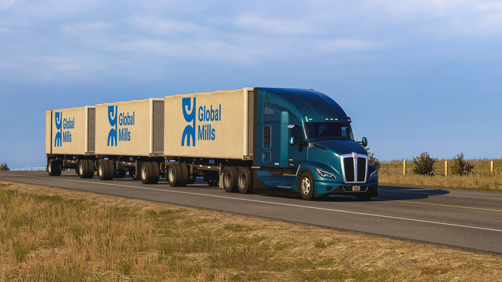

Videojuegos
Los videojuegos representan para mí una vía de escape y distracción donde puedo sumergirme en mundos alternativos, explorar historias fascinantes y desafiar mi destreza y habilidades. En un universo digital, encuentro la libertad de ser quien desee ser: un valiente héroe enfrentando monstruos, un estratega maestro conquistando reinos, o simplemente un explorador curioso recorriendo paisajes surrealistas. En medio de la inmersión, los videojuegos me permiten desconectar del estrés cotidiano y conectar con emociones y experiencias únicas. Creando un espacio donde la imaginación y la diversión se entrelazan de manera inigualable.Estos son mis juegos favoritos:
- American Truck Simulator
-
- Farming Simulator 15
- Bournout 3
- Forza
- Sonic the Fighters Mario Bros
- King Of Fighters
- Mario Bros
- Bomberman
American Truck Simulator
IMG_01

Música
La música regional mexicana tiene la extraordinaria capacidad de transportarnos a paisajes sonoros llenos de pasión y autenticidad. Sus melodías vibrantes y sus letras profundas cuentan historias de amor, desamor, tradiciones arraigadas y la vida cotidiana en la tierra del mariachi y el corrido. Con sus ritmos contagiosos y la emotividad de sus voces, el regional mexicano logra crear una conexión única entre la audiencia y las raíces culturales de México. Ya sea con los alegres acordes de la banda, la cadencia melancólica de la ranchera o la intensidad del norteño, esta música resuena en el corazón de quienes la amamos, celebrando la riqueza musical y la diversidad de nuestro querido México.
- Trono de Mexico
- Tierra Cali
- Joan Sebastian
- Los Temerarios
- Los Dorados
- Los Principez De La Musica Norteña
- Los Alamenos de la Sierra
- La Pócima Norteña
- Grupo Liberacion
- Grupo BXS
- Grupo los Acosta
- Grupo Clasificado
- Grupo Quintanna
- Voz de Mando
- Seleccion
Lugares que me gustaría visitar
Los destinos que anhelo visitar capturan la esencia vibrante y diversa de México. Los Altos de Jalisco prometen un viaje a través de paisajes pintorescos, donde los campos de agave se extienden hasta donde alcanza la vista, ofreciendo una visión única de la tradición tequilera. Visita Mexico
San Cristóbal de las Casas, en Chiapas, es un enclave colonial encantador con sus calles empedradas y arquitectura colorida, donde la cultura indígena se entrelaza con la historia colonial. La Laguna de Bacalar, conocida como la "Laguna de los Siete Colores", despierta la imaginación con sus aguas turquesa y la promesa de serenidad en medio de la naturaleza. Por último, Chichén Itzá, una mar
avilla arqueológica en la península de Yucatán, es un testimonio impresionante de la grandeza de la civilización maya, con su imponente pirámide y complejo ceremonial. Estos destinos reflejan la riqueza cultural y natural que hace de México un país fascinante y diverso.
- Los Altos Jalisco
- San Cristóbal de Las Casas
- Laguna de Bacalar
- Chichén Itzá
Los Altos Jalisco